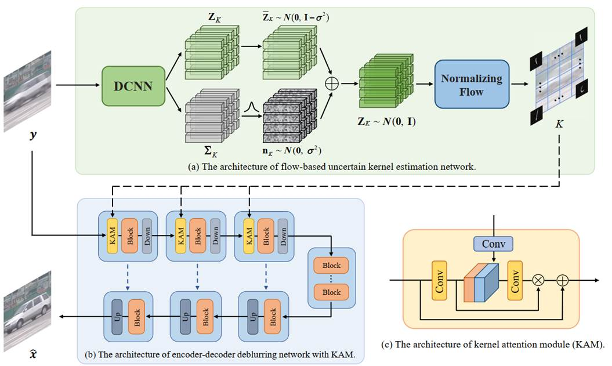
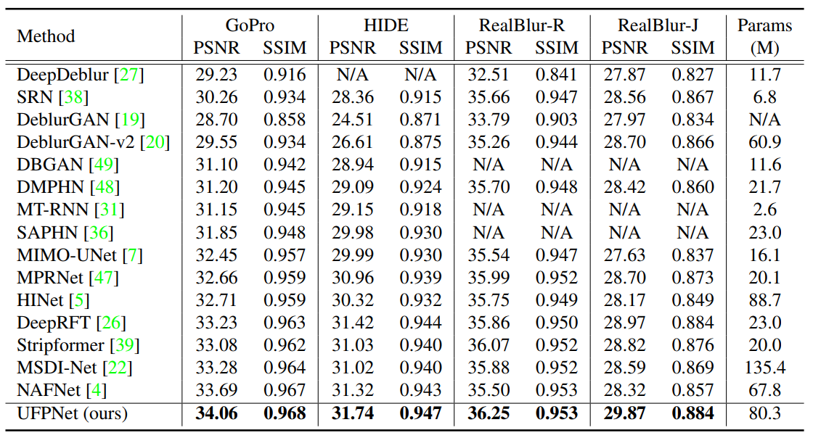
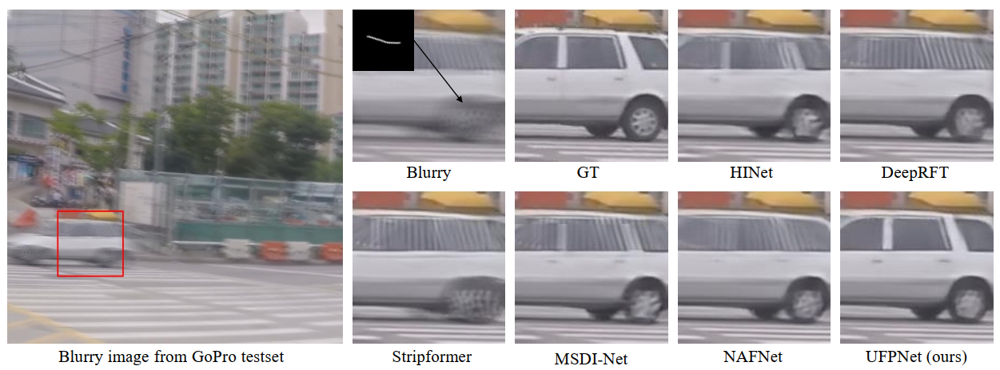
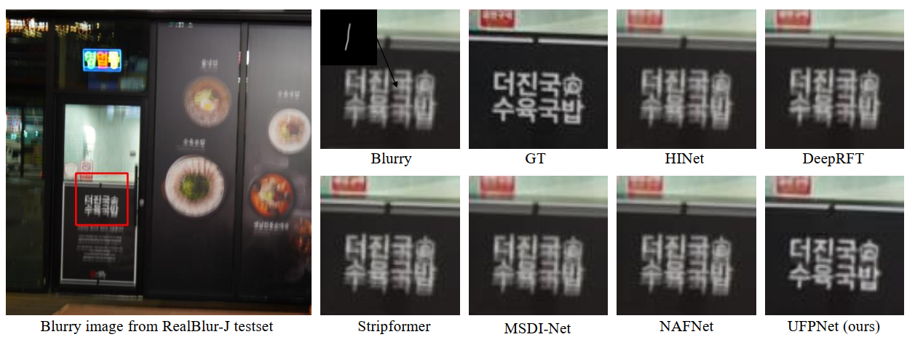

Self-supervised Non-uniform Kernel Estimation with Flow-based Motion Prior
for Blind Image Deblurring
Zhenxuan Fang1 Fangfang Wu1* Weisheng Dong1 Xin Li2 Jinjian Wu1 Guangming Shi1
1Xidian University 2 West Virginia University
 |
Figure 1. Overview of the proposed UFPNet for blind image deblurring. The architecture of (a) the flow-based uncertain kernel
estimation network, (b) the encoder-decoder deblurring network with kernel attention module, (c) the kernel attention module (KAM).
Abstract
Many deep learning-based solutions to blind image deblurring estimate the blur representation and reconstruct the target image from its blurry observation. However, these methods suffer from severe performance degradation in real-world scenarios because they ignore important prior information about motion blur (e.g., real-world motion blur is diverse and spatially varying). Some methods have attempted to explicitly estimate non-uniform blur kernels by CNNs, but accurate estimation is still challenging due to the lack of ground truth about spatially varying blur kernels in real-world images. To address these issues, we propose to represent the field of motion blur kernels in a latent space by normalizing flows, and design CNNs to predict the latent codes instead of motion kernels. To further improve the accuracy and robustness of non-uniform kernel estimation, we introduce uncertainty learning into the process of estimating latent codes and propose a multi-scale kernel attention module to better integrate image features with estimated kernels. Extensive experimental results, especially on real-world blur datasets, demonstrate that our method achieves state-of-the-art results in terms of both subjective and objective quality as well as excellent generalization performance for non-uniform image deblurring.
 |
|
CVPR 2023 Supplementary Material
Citation
Zhenxuan Fang, Fangfang Wu, Weisheng Dong, Xin Li, Jinjian Wu, and Guangming Shi. Self-supervised Non-uniform Kernel Estimation with Flow-based Motion Prior
for Blind Image Deblurring. In Proceedings of the IEEE/CVF Conference on Computer Vision and Pattern Recognition, 2023.
Bibtex
@inproceedings{fang2022self,
title={Self-supervised Non-uniform Kernel Estimation with Flow-based Motion Prior for Blind Image Deblurring },
author={Fang, Zhenxuan and Wu Fangfang and Dong, Weisheng and Li, Xin and Wu, Jinjian and Shi, Guangming},
booktitle={ Proceedings of the IEEE/CVF Conference on Computer Vision and Pattern Recognition},
year={2023},
}
Download
 |
Results
Quantitative Results:
Table 1. The comparison results on the benchmark datasets, the models are trained only on the GoPro dataset.
 |
Visualization Results:
Figure 2. Visual comparisons on the GoPro dataset. The estimated kernel at the indicated pixel is illustrated on the left-top.
 |
Figure 3. Visual comparisons on the RealBlur-J dataset. The estimated kernel at the indicated pixel is illustrated on the left-top.
 |
Contact
Zhenxuan Fang, Email: zxfang@stu.xidian.edu.cn
Fangfang Wu, Email: wufangfang@xidian.edu.cn
Weisheng Dong, Email: wsdong@mail.xidian.edu.cn
Xin Li, Email: xin.li@mail.wvu.edu
Jinjian Wu, Email: jinjian.wu@mail.xidian.edu.cn
Guangming Shi, Email: gmshi@xidian.edu.cn